EtherNet/IP™ Adapter3.02.00 |
 |


|
EtherNet/IP™ Adapter3.02.00 |
|
|
The follwonig example assumes that you have the RSLogix 5000 software by Rockwell Automation installed and fully activated on your development system. The example has been created with RSLogixStandard Edition V20.05.00. The example program itself is coded in ladder logic, which is commonly used to program PLCs for sequential process control.
After RSLogix has been started the following development environment is available.
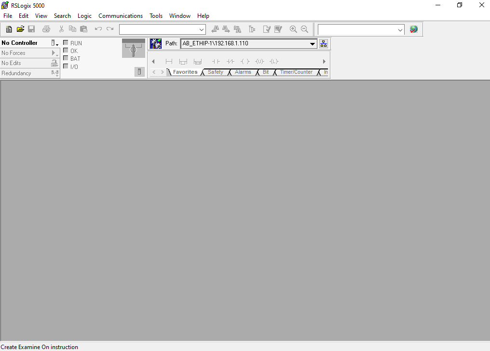
Before creating and configuring a new project for the EtherNet/IP Adapter example, the corresponding device description files must be installed. Open the Rockwell Automation EDS Wizard by selecting EDS Hardware Installation Tool under the Tools drop down menu.
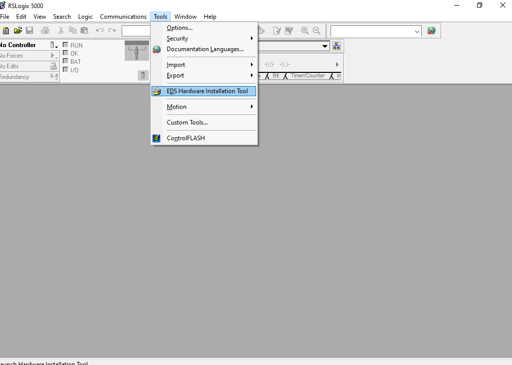
The Rockwell Automation EDS Wizard dialog window opens:
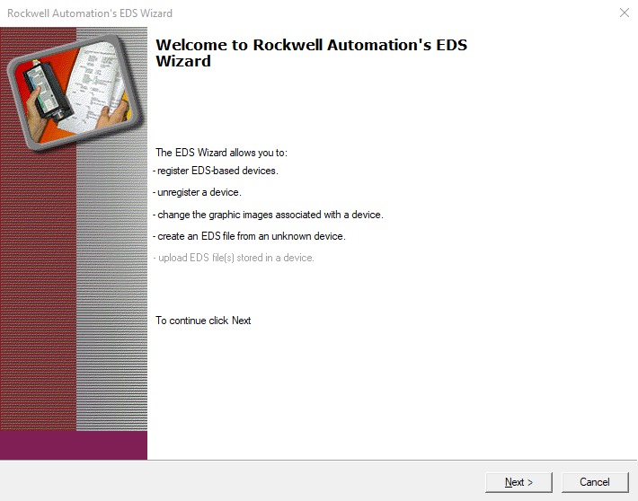
From the available options, select Register an EDS file(s).
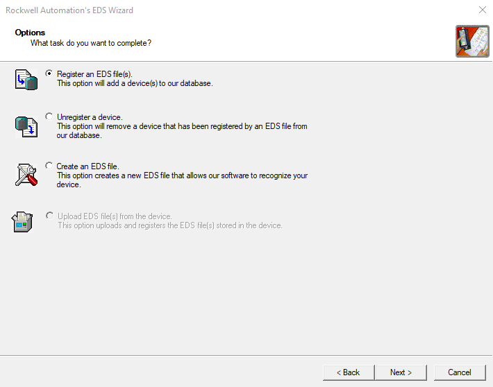
Select Register a single file.
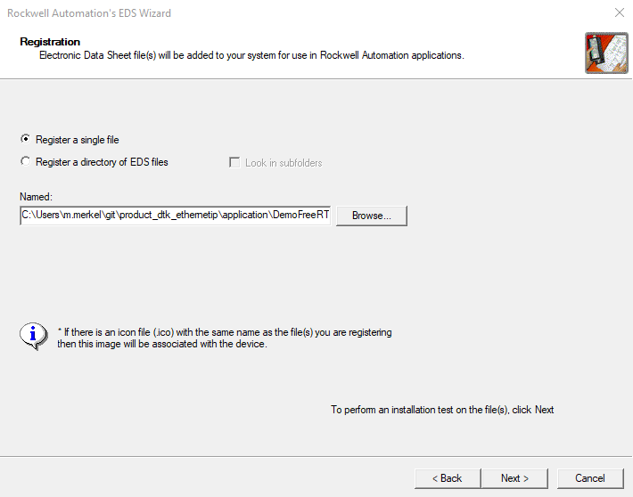
After importing the file, the EDS File Installation Test Results are presented, and the user is given the option to change the icon with which the EtherNet/IP Adapter example is represented in the Control Organizer of the RSLogix software.
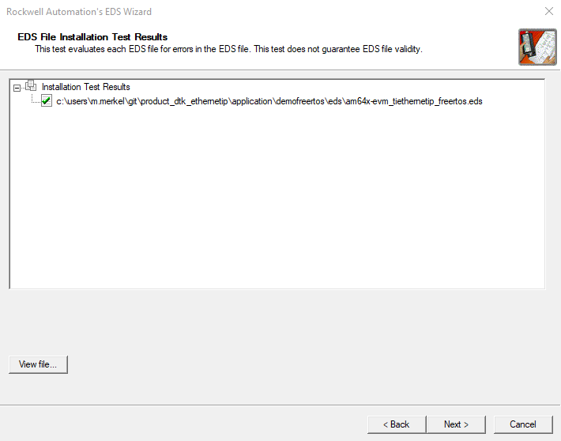
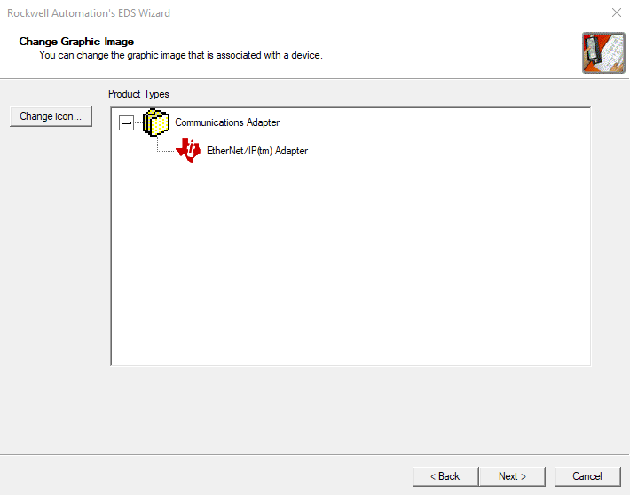
Finally, a summary of the devices installed is displayed.
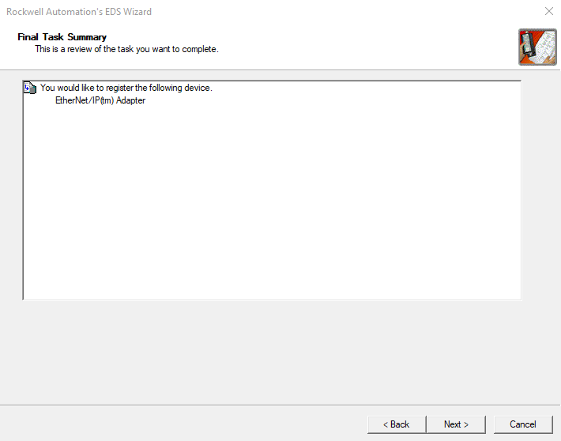
Now that RSLogix and the device repository have been prepared, a new project can be created. Under the File drop down menu, select New..., alternatively use the keyboard shortcut Ctrl+N. The New Controller dialog opens. Select the PLC that you will use as EtherNet/IP Scanner device, here we use a Rockwell type 1769-L16ER-BB1B CompactLogix™ 5370 Controller. Enter a project name and configure the number of Expansion I/O modules.
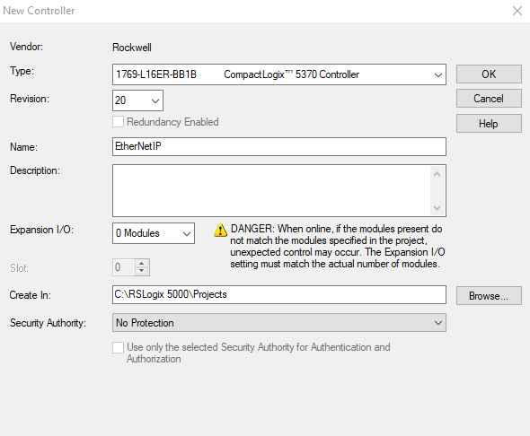
Next, the EtherNet/IP Adapter device is added under I/O Configuration → Ethernet in the Controller Organizer. Right-click on Ethernet and select New Module... The Select Module Type dialog is displayed. In the dialog you may apply a search text to filter for specific devices, for example by Texas Instruments.
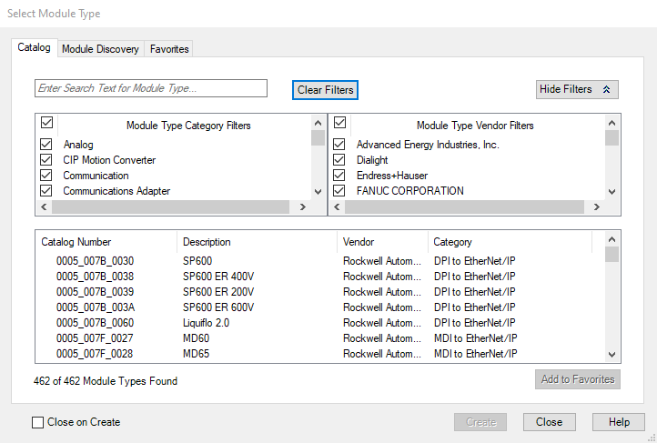
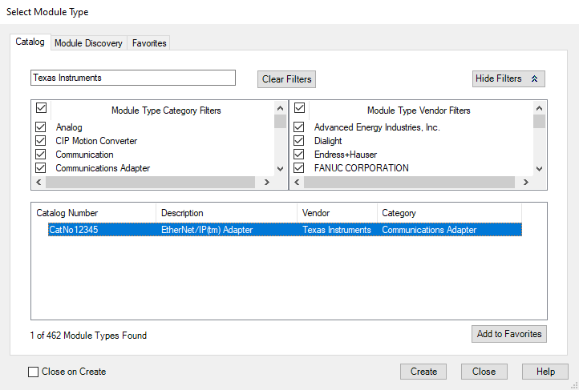
Select the EtherNet/IP(tm) Adapter and Create the device. In the New Module dialog, you can assign a device name, the IP address of the device or, under Connections, the requested packet interval.
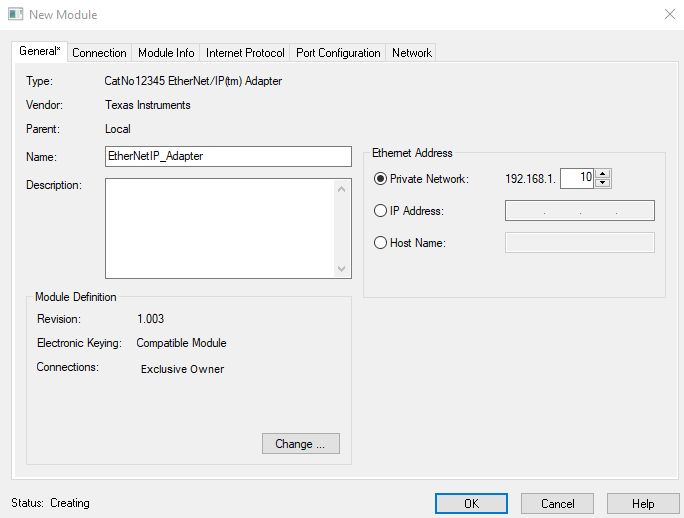
The new device appears in the Controller Organizer and can be configured further.
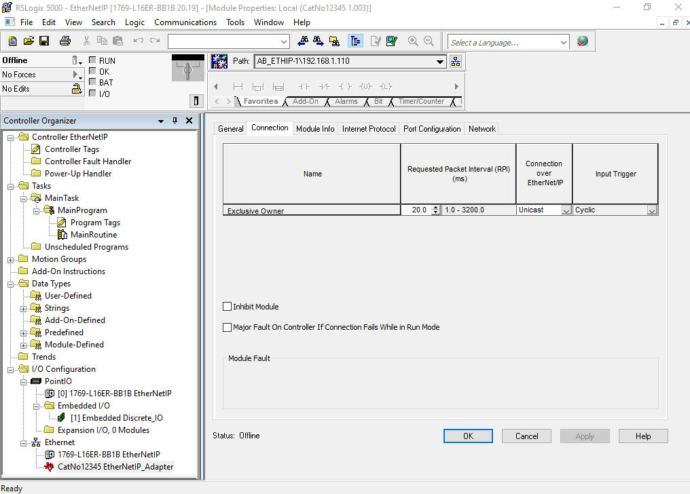
In the final steps the actual program task(s) are created.
Controller Tags under the Controller EtherNetIP matching the imported EtherNetIP_Adapter are created during the Create New Module process.
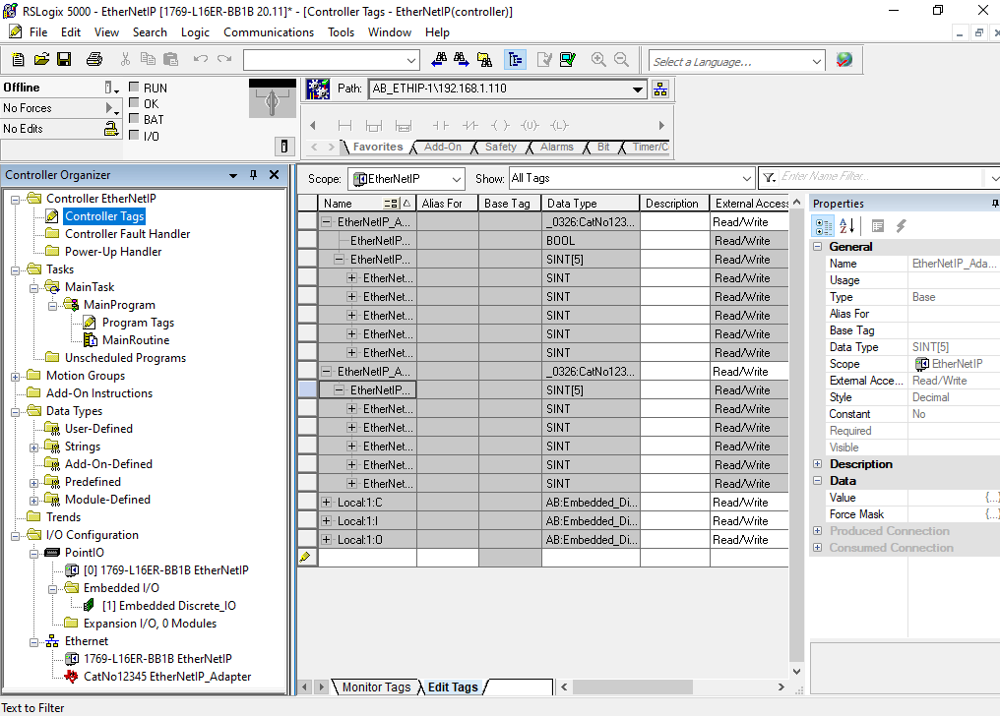
Program Tags that control the actual program flow are created next. In this particular case we require a set of timers and two boolean variables to start those timers.

The following screen shot shows the final implementation of the MainRoutine in ladder logic.
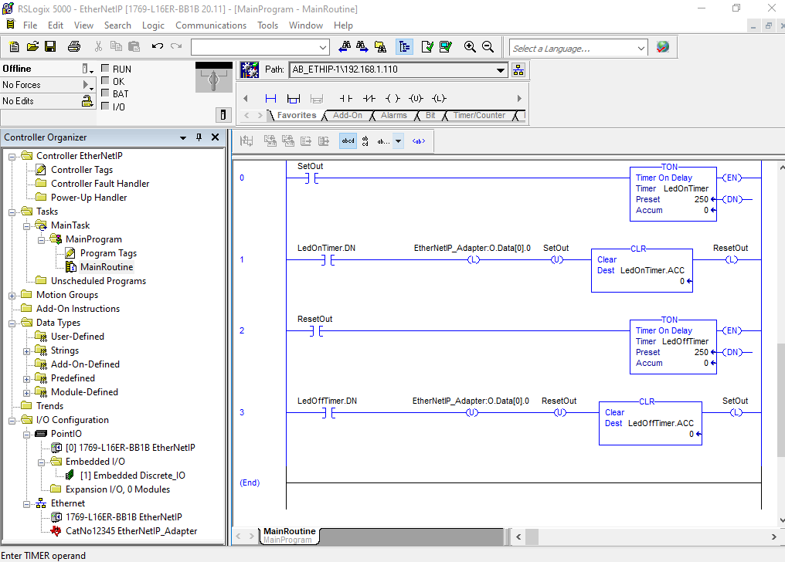
The RSLogix environment is still in Offline mode. Right click on the small icon to the right of the mode display and select Download.
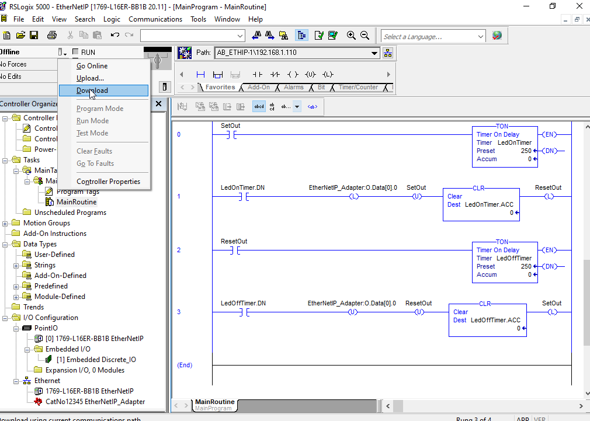
When finalizing the download process a confirmation to switch the PLC to Run Mode is requested.
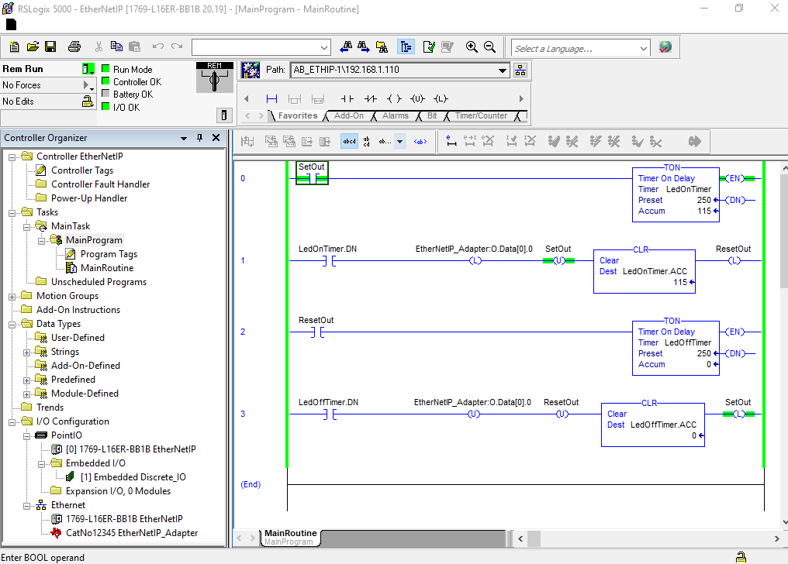
To start the timers and the program flow, the SetOut boolean variable must be toggled once manually.
 1.8.17
1.8.17